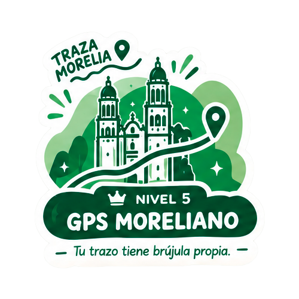

Traza de memoria la ubicación, forma y extensión del Río Chiquito
Pista geográfica
Traza MoreliaMemoria territorial de la ciudad de Morelia
DIFÍCIL

0/100
Nivel 5: GPS Moreliano
"Tu trazo tiene brújula propia."
Tómale una foto o video a tu marcador, etiquétanos en tus redes sociales y
compartimos tu post, el post con mas likes se llevara una sopresa a fin de mes.
IMPLANmorelia
·
implan_morelia
Desglose de Memoria Espacial
Puntaje por croquis dibujado
Instituto Municipal de Planeación de Morelia
Traza Morelia
Traza de memoria sobre el mapa el acueducto, ríos y vialidades emblemáticas de
Morelia. Evaluaremos tus trazos en tiempo real contra la cartografía oficial del IMPLAN.
Normal: con referencias·Difícil: sin referencias
Obligatorio para iniciar la prueba y firmar tu
croquis.
Traza de memoria sobre el mapa el acueducto, ríos y vialidades emblemáticas de
Morelia. Evaluaremos tus trazos en tiempo real contra la cartografía oficial del IMPLAN.
1
Identifica el elemento: Observa en la barra superior el nombre y color de la vialidad
o río a trazar (ej. Río Chiquito, Calzada la Huerta, Acueducto).
2
Traza de memoria: Dibuja sobre el mapa la trayectoria, curvatura y extensión del
elemento tal como lo recuerdes en la ciudad.
3
Evalúa o corrige: Al terminar presiona Listo para evaluar tu
precisión. Si deseas repetirlo antes de calificar, pulsa Borrar trazo.
4
Pistas y Dificultad: Pulsa Pista (💡) para obtener una referencia
clave. Puedes alternar al Modo difícil para dibujar sin puntos de referencia.
En Celulares y Tablets (Táctil)
DibujarDesliza con 1 solo dedo sobre la pantalla.
MoverDesliza con 2 dedos simultáneos para mover el mapa.
ZoomPellizca con 2 dedos o pulsa los botones + / −.
CentrarToca el botón flotante ⟲ (arriba a la derecha).
En Computadora (PC / Laptop)
DibujarClic izquierdo sostenido y arrastra el ratón.